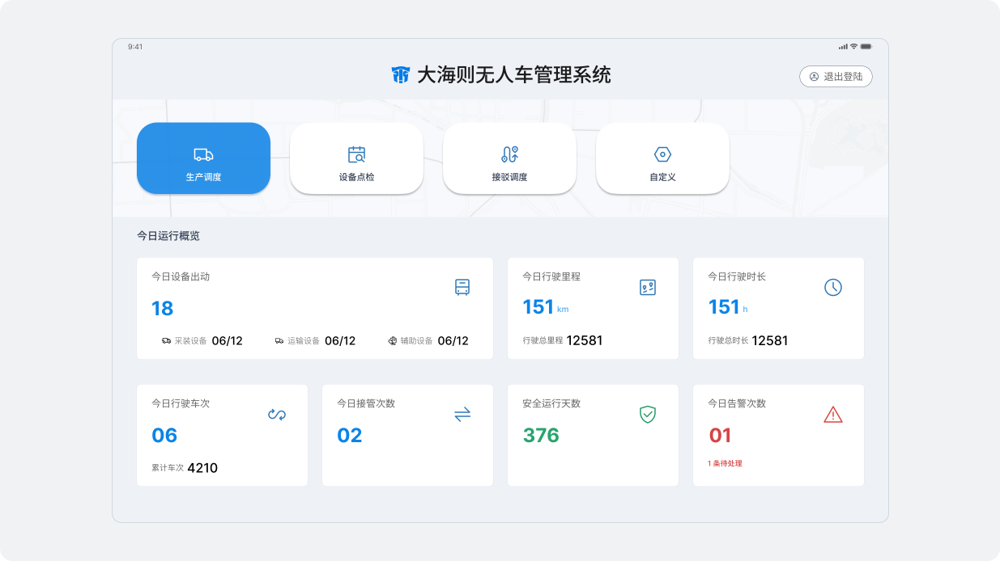
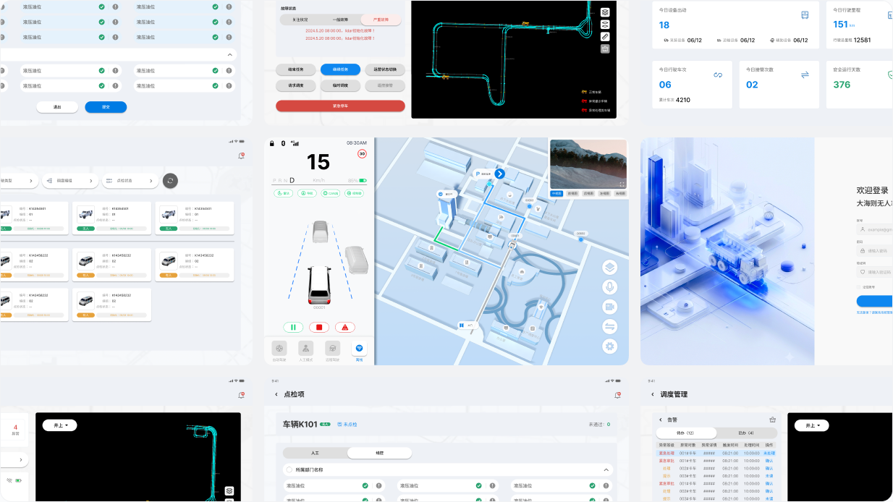
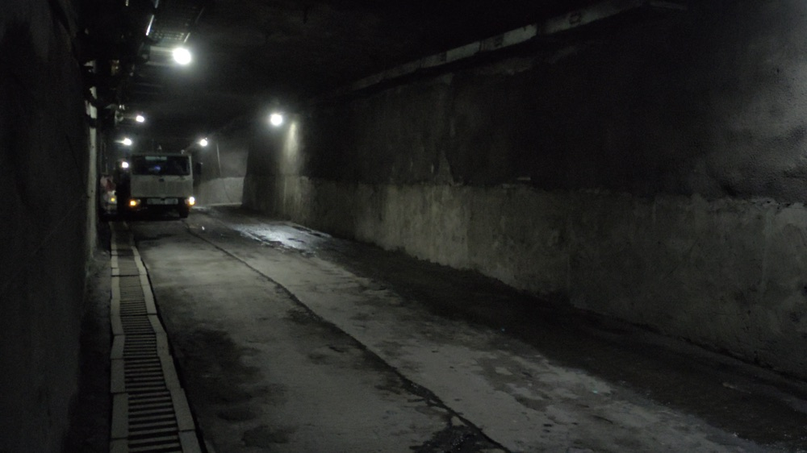
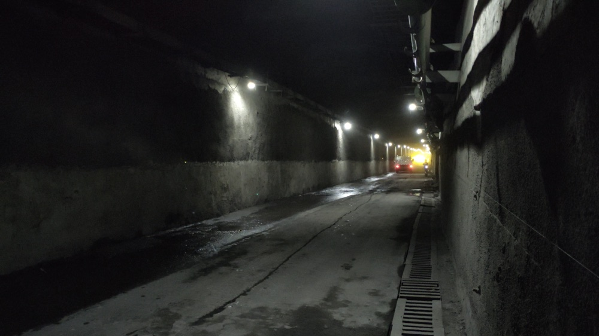
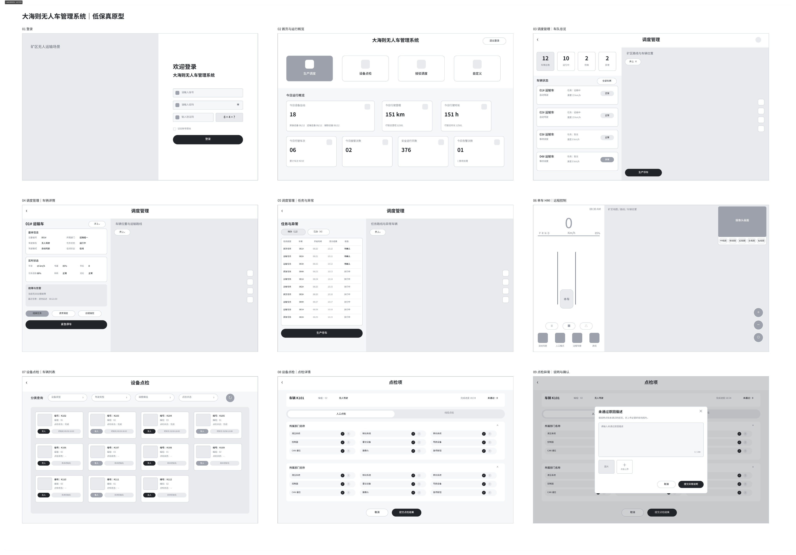
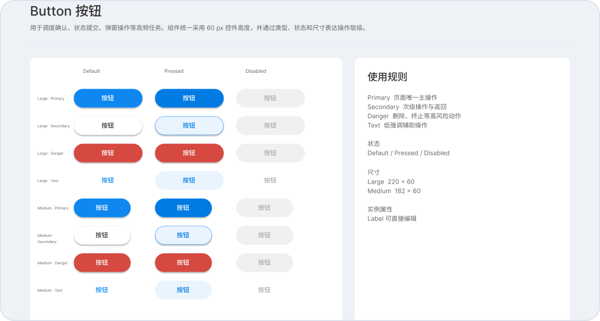
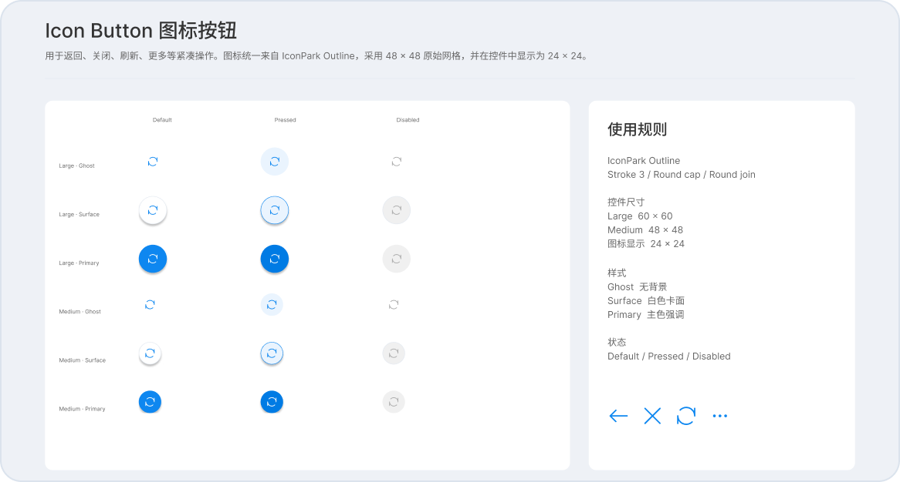
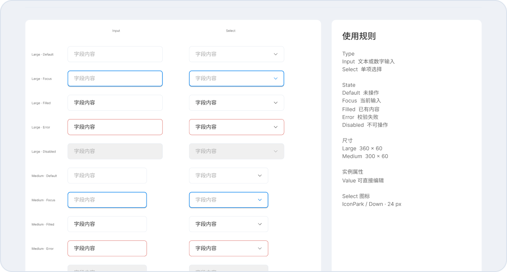
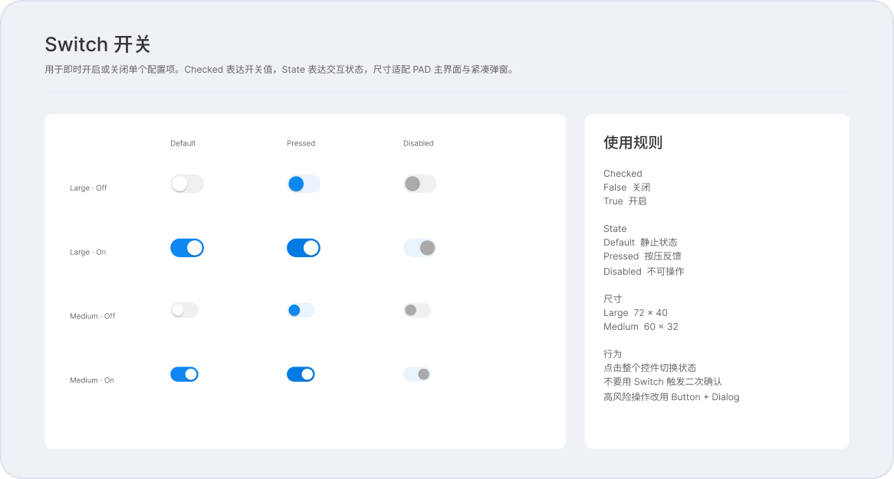
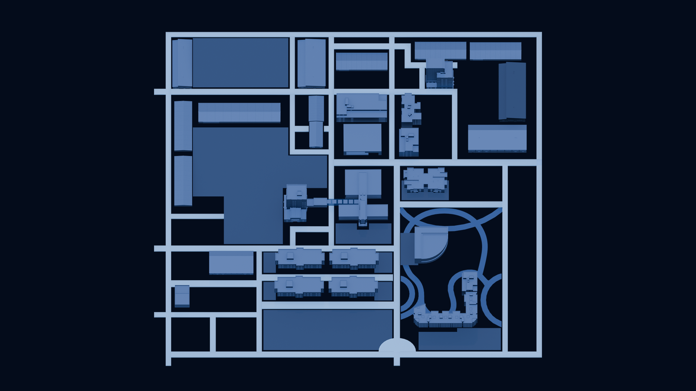

车辆调度
- 查看车队状态
- 选择目标车辆
- 下发运输任务
- 处理任务异常
矿区工业 HMI / PAD 端
面向矿区调度员与安全员的 PAD 端无人车调度、车辆控制与设备点检系统。

大海则无人车管理系统是一套面向矿区和工业场景的无人驾驶车辆管理平台。调度人员、安全员和点检人员通过 PAD 完成生产调度、设备点检、车辆监控与告警处理，实现对无人车运行状态的实时可视化管理。
项目建设前，设备点检、生产调度等核心功能相互独立，生产调度也缺少可视化数据展示。原系统直接套用通用模板，没有针对 PAD 端和现场强光环境设计，在界面层级、功能布局、易用性与视觉表现上都需要重新梳理。
从现场任务到 PAD 操作闭环，用可靠、清晰、可执行的界面支撑矿区无人运输。

我与产品经理进入现场，与调度人员、安全员、点检人员和接管人员进行座谈，了解他们对原系统的真实感受，再把问题整理成可验证的界面任务。



结合现场调研，我把主要任务梳理为车辆调度、单车控制和设备点检，再按实际操作顺序整理关键步骤。
在进入高保真设计前，先通过原型梳理调度、车辆控制和设备点检的主要流程，并与产品和研发一起确认操作逻辑。根据评审反馈，对页面层级、状态展示和异常操作进行了调整。

梳理调度员、安全员的任务、状态与异常处置关系。
突出车辆状态、任务反馈与高风险操作的确认机制。
在目标 PAD 上校验字号、密度和触控区域，并配合开发落地。
核心链路围绕“选择车辆 → 确认状态 → 下发任务 → 观察反馈 → 异常干预”展开。调度人员在同一界面中完成任务下发与运行监控；当状态异常时，系统通过醒目的反馈和二次确认，帮助操作人员及时停止任务或进入远程控制。
基于 PAD 阅读距离、触控方式与高风险操作场景，统一颜色、字号、间距、按钮、输入控件、状态与图标规则。




从系统结构、地图资产到 PAD 高保真界面，设计始终围绕真实任务和现场判断展开。



完成现场调研、方案设计与开发配合，并随项目完成部署。
车队调度、单车控制与设备点检使用统一的交互语言。
如果重新推进，我针对 PAD 端的操作习惯和用户体验方面来进行跟进一步的优化，现在有些页面在信息密度方面还是有进一步优化的空间，同时在操作流程方面还可以更简化一点。
PAD 真机验证让我意识到，桌面画布上的“清楚”并不等于现场可用。字号、信息密度、触控区域和反馈强度，都需要在目标设备与真实阅读距离下反复校验，同时因为该项目在使用环境方面比较特殊，更应该注意这一方面。
路线表达曾采用更具空间感的 2.5D 视角，但坐标对齐和路线识别不够稳定。最终改为俯视表达，优先保证路线信息清楚、可靠和可执行。